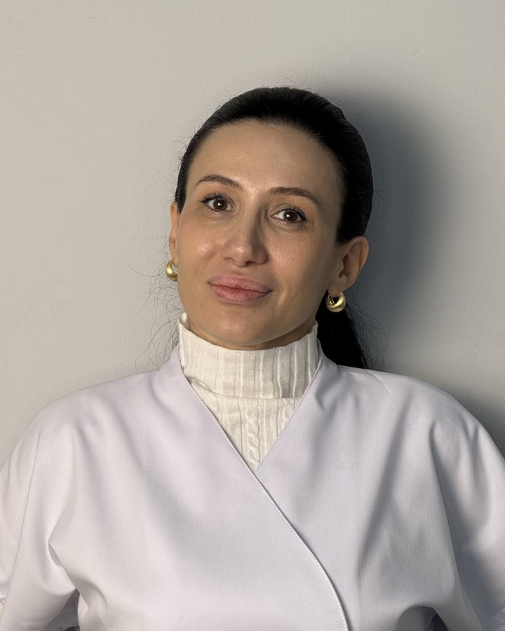

Хаджалов Абузар Магомедович
Травматолог-ортопед, кистевой реабилитолог
Суставы, травмы, восстановление после операций, PRP.
до 3 000 ₽
Услуги
Специалисты
Можно записаться к конкретному врачу. Если вам спокойнее со специалистом-женщиной, скажите об этом администратору.
Специалисты
Суставы, травмы, восстановление после операций, PRP.
Боль в спине и шее, грыжи, спортивные травмы.

Лечебная гимнастика по методике СИАС: сколиоз и осанка у детей и взрослых, лечебная физкультура для детей.
Лечебная физкультура и мануальная терапия.

Страх движения после травмы, хроническая боль и стресс — то, что мешает восстановиться.

Стаж 9 лет. Сеченовский университет, повышение квалификации по гастроэнтерологии и гепатологии. Желудок, кишечник, печень.
Центр учит других врачей. Павел Куделя проводит здесь авторские семинары по сухим иглам для специалистов, в центре проходил семинар KinesioCourse по кинезиотейпированию.
Короткие видео от специалистов центра. Видео начинает загружаться, только когда вы нажмёте «воспроизвести».
Имеются противопоказания. Необходима консультация специалиста.
Общество с ограниченной ответственностью «Центр восстановительной медицины «ОРТО-РЕКАВЕРИ» (ОГРН 1210500012392, ИНН 0572029293). Адрес: 367015, Республика Дагестан, г.о. город Махачкала, г. Махачкала, пр-кт Имама Шамиля, д. 35А, этаж 1. Лицензия на медицинскую деятельность № Л041-01172-05/00620772 от 12.10.2022, выдана: Министерство здравоохранения Республики Дагестан. Электронная почта для обращений: orto_recovery1805@mail.ru. Информация на сайте не является публичной офертой и не заменяет консультацию врача. Демо-версия сайта, подготовлена для обсуждения с центром.
Пример концепции. Фото врачей, процедур и кабинетов — центра (фотосессия 2024 со старого сайта); фото на первом экране, «Стопа», «Реабилитация» и борьба — Unsplash. Цены — прайс клиники.